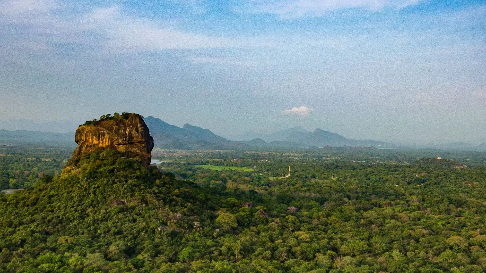
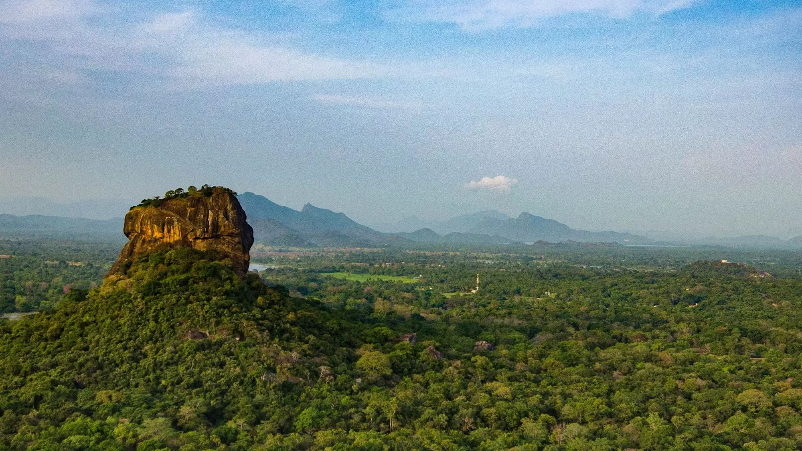
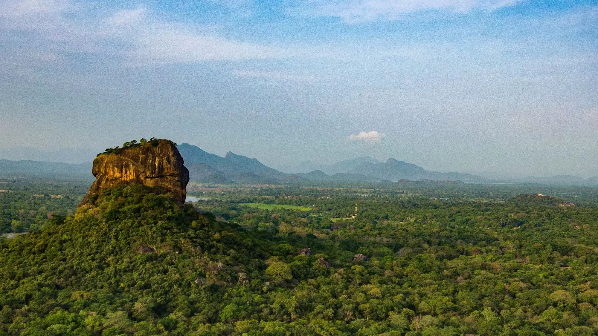
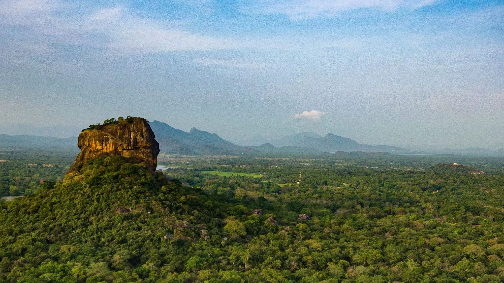
Sigiriya or Sinhagiri (Lion Rock Sinhala: සීගිරිය, Tamil: சிகிரியா/சிங்ககிரி, pronounced
see-gi-ri-yə)
is an ancient rock fortress located in the northern Matale District near the town of Dambulla in the Central
Province, Sri Lanka. It is a site of historical and archaeological significance that is dominated by a
massive
column of granite rock approximately 180 m (590 ft) high.
According to the ancient Sri Lankan chronicle the
Cūḷavaṃsa,
this area was a large forest, then after storms and landslides it became a hill and was selected by King
Kashyapa
(AD 477–495) for his new capital. He built his palace on top of this rock and decorated its sides with
colourful
frescoes. On a small plateau about halfway up the side of this rock he built a gateway in the form of an
enormous lion.
The name of this place is derived from this structure; Sīnhāgiri, the Lion Rock (an etymology similar to
Sinhapura,
the Sanskrit name of Singapore, the Lion City).
The capital and the royal palace were abandoned after the
king's death.
It was used as a Buddhist monastery until the 14th century. Sigiriya today is a UNESCO listed World Heritage
Site.
It is one of the best preserved examples of ancient urban planning.

It is likely that the area around Sigiriya was inhabited since prehistoric times. There is
clear evidence that the many rock shelters and caves in the vicinity were occupied by Buddhist monks and
ascetics from as early as the 3rd century BC. The earliest evidence of human habitation at Sigiriya is the
Aligala rock shelter to the east of Sigiriya rock, indicating that the area was occupied nearly five
thousand years ago during the Mesolithic Period.
Buddhist monastic settlements were established during the 3rd century BC in the western and northern slopes
of the boulder-strewn hills surrounding the Sigiriya rock. Several rock shelters or caves were created
during this period. These shelters were made under large boulders, with carved drip ledges around the cave
mouths. Rock inscriptions are carved near the drip ledges on many of the shelters, recording the donation of
the shelters to the Buddhist monastic order as residences. These were made in the period between the 3rd
century BCE and the 1st century AD.
In 477 AD, Kashyapa I, the king’s son by a non-royal consort, seized the throne from King Dhatusena,
following a coup assisted by Migara, the King’s nephew and army commander. The rightful heir, Moggallana,
fearing for his life, fled to South India. Afraid of an attack by Moggallana, Kashyapa moved the capital and
his residence from the traditional capital of Anuradhapura to the more secure Sigiriya. During King
Kashyapa’s reign (477 to 495 AD), Sigiriya was developed into a complex city and fortress. Most of the
elaborate constructions on the rock summit and around it, including defensive structures, palaces, and
gardens, date from this period.
The Cūḷavaṃsa describes King Kashyapa as the son of King Dhatusena. Kashyapa murdered his father by walling
him up alive and then usurping the throne which rightfully belonged to his half-brother Moggallana,
Dhatusena's son by the true queen. Moggallana fled to India to escape being assassinated by Kashyapa, but
vowed revenge. In India he raised an army with the intention of returning and retaking the throne of Sri
Lanka, which he considered to be rightfully his. Expecting the inevitable return of Moggallana, Kashyapa is
said to have built his palace on the summit of Sigiriya as a fortress as well as a pleasure palace.
Moggallana finally arrived, declared war, and defeated Kashyapa in 495 CE. During the battle Kashyapa's
armies abandoned him and he committed suicide by falling on his sword.
The Cūḷavaṃsa and folklore inform us that the battle-elephant on which Kashyapa was mounted changed course
to take a strategic advantage, but the army misinterpreted the movement as the king's having opted to
retreat, prompting the army to abandon him altogether. It is said that being too proud to surrender he took
his dagger from his waistband, cut his throat, raised the dagger proudly, sheathed it, and fell dead.
Moggallana returned the capital to Anuradhapura, converting Sigiriya into a Buddhist monastery complex,
which survived until the 13th or 14th century. After this period, no records are found on Sigiriya until the
16th and 17th centuries, when it was used briefly as an outpost of the Kingdom of Kandy.
Sigiriya Rock from above
Alternative stories have the primary builder of Sigiriya as King Dhatusena, with Kashyapa finishing the work
in honour of his father. Still other stories describe Kashyapa as a playboy king, with Sigiriya his pleasure
palace. Even Kashyapa's eventual fate is uncertain. In some versions he is assassinated by poison
administered by a concubine; in others he cuts his own throat when deserted in his final battle.Still
further interpretations regard the site as the work of a Buddhist community, without a military function.
This site may have been important in the competition between the Mahayana and Theravada Buddhist traditions
in ancient Sri Lanka.
In Professor Senarath Paranavithana's book The Story of Sigiriya, King Dathusena is said to have taken the
advice of the Persian Nestorian Priest Maga Brahmana on building his palace on Sigirya. According to
Paranavithana, during this period over seventy-five ships carrying Murundi soldiers from Mangalore arrived
in Sri Lanka and landed in Chilaw to protect King Dathusena, most of them Christians. King Dathusena's
daughter was married to Migara, a Christian and the commander of the Singhalese army.


In 1831 Major Jonathan Forbes of the 78th (Highlanders) Regiment of Foot of the British Army, while
returning on horseback from a trip to Pollonnuruwa, encountered the "bush covered summit of Sigiriya".
Sigiriya came to the attention of antiquarians and, later, archaeologists. Archaeological work at Sigiriya
began on a small scale in the 1890s. H.C.P. Bell was the first archaeologist to conduct extensive research
on Sigiriya. The Cultural Triangle Project, launched by the Government of Sri Lanka, focused its attention
on Sigiriya in 1982. Archaeological work began on the entire city for the first time under this project.
There was a sculpted lion's head above the legs and paws flanking the entrance, but the head collapsed years
ago.
Sigiriya consists of an ancient citadel built by King Kashyapa during the 5th century. The Sigiriya site
contains the ruins of an upper palace located on the flat top of the rock, a mid-level terrace that includes
the Lion Gate and the mirror wall with its frescoes, the lower palaces clings to the slopes below the rocks.
The moats, walls and gardens of the palace extended for a few hundred metres from the base of the rock. The
site was both a palace and a fortress. The upper palace on the top of the rock includes cisterns cut into
the rock.
Sigiriya is considered to be one of the most important urban planning sites of the first millennium, and the site plan is considered very elaborate and imaginative. The plan combined concepts of symmetry and asymmetry to intentionally interlock the man-made geometrical and natural forms of the surroundings. On the west side of the rock lies a park for the royals, laid out on a symmetrical plan; the park contains water-retaining structures, including sophisticated surface/subsurface hydraulic systems, some of which are working today. The south contains a man-made reservoir; these were extensively used from the previous capital of the dry zone of Sri Lanka. Five gates were placed at entrances. The more elaborate western gate is thought to have been reserved for the royals.
 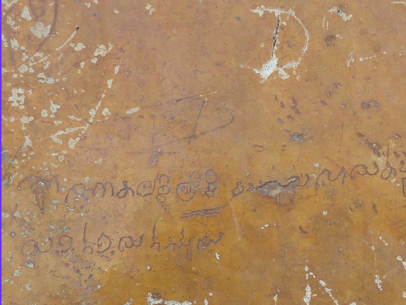
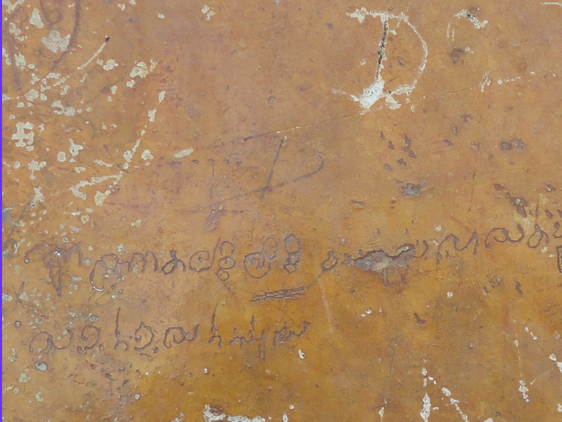


Originally this wall was so reflective that the king could see himself as he walked alongside it. Made of
brick masonry and covered in highly polished white plaster, the wall is now partially covered with verses
scribbled by visitors, some of them dating from as early as the 8th century. Most, however, date from the
9th and 10th century. People of all walks of life, from poets to provincial governors to housewives, wrote
on the wall. Even bhikkhus were not exempt; they wrote poetry on varying subjects such as love, irony,
and experiences of all sorts. This is the only evidence of poetry found in the Anuradhapura period.
These poems are of high literary value because of their intricate use of symbolism and word-play techniques.
One such example is;
ඇසිමි - දුන් - හසුන් - හසුන් - සෙයින් - විල් - දුත්
Aesimi - dun hasun - hasun - seyin - vil - dut
Like geese who have seen a lake, I listened to the message given by her.
මුල - ලා - මා - සැනැහි - පුල් - පියුමන් - සේය් - බමර් - දුත්
Mula - la - ma - saenaehi - pul - piyuman - sey - bamar - dut
Like a bee who has seen full-blown lotuses, the bewildered heart of mine was consoled.
This lovely couplet shows that the Sinhalese of old were great poets. They not only had a wonderful sense of
rhyme and metre, but also resorted to a poetic device we call ‘play on words’ as we see in the combination
of hasun (message) with hasun (swans). The poet’s eagerness to hear from his lady love is compared to the
bee’s fascination for lotus blooms, whose large petals provide it an easy landing pad to drink its nectar
and frolic if it wishes.
Out of the 1500 plus poems, most are addressed to the ladies on the frescoes. Men praised their beauty and
women shared their envy. A contemporary female, clearly less enamoured with the frescoes, records different,
if equally passionate emotions:
"A deer-eyed maiden of the mountain side arouses anger in my mind. In her hand she holds a string of pearls,
and in her eyes she assumes rivalry with me."
Further writing on the mirror wall now has been banned for the protection of the old writings. The
Archaeological Commissioner of Ceylon, Senarath Paranavithana, deciphered 685 verses written in the 8th, 9th
and 10th centuries CE on the mirror wall. One such poem from these long-past centuries,
බුදල්මි
සියොර ආමි සිහිගිරි
බැලීමි ගි බොහො ජන
ලිතූයෙන් නොලිමි
Roughly translated from ancient Sinhala, is: "I am Budal [the writer's name]. Came with hundreds of people
to see Sigiriya. Since all the others wrote poems, I did not!"

 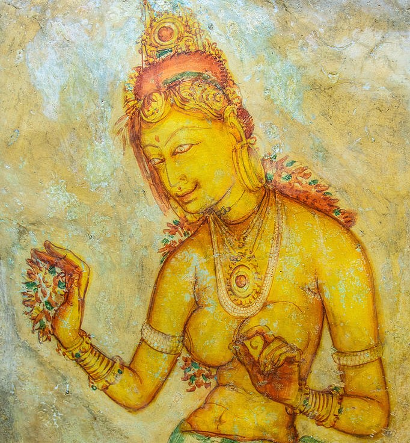
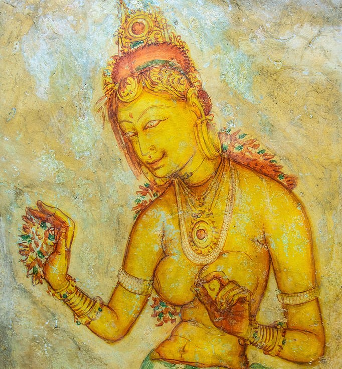
John Still in 1907 wrote, "The whole face of the hill appears to have been a gigantic
picture gallery... the largest picture in the world perhaps".[12] The paintings would have covered most of
the western face of the rock, an area 140 m (460 ft) long and 40 m (130 ft) high. There are references in
the graffiti to 500 ladies in these paintings. However, most have been lost forever. More frescoes,
different from those on the rock face, can be seen elsewhere, for example on the ceiling of the location
called the "Cobra Hood Cave".
Frescos at Sigiriya found at Cobra hood cave
Although the frescoes are classified as in the Anuradhapura period, the painting style is considered
unique; the line and style of application of the paintings differing from Anuradhapura paintings. The
lines are painted in a form which enhances the sense of volume of the figures. The paint has been applied in
sweeping strokes, using more pressure on one side, giving the effect of a deeper colour tone towards the
edge. Other paintings of the Anuradhapura period contain similar approaches to painting, but do not have the
sketchy lines of the Sigiriya style, having a distinct artists' boundary line. The true identity of the
ladies in these paintings still has not been confirmed. There are various ideas about their identity. Some
believe that they are the ladies of the kings while others think that they are women taking part in
religious observances. These pictures have a close resemblance to paintings seen in the Ajanta Caves in
India.
On 14 October 1967, an incident of vandalism took place where paint was splashed on the frescoes. Luciano Maranzi, an expert trained at the International Centre for the Study of the Preservation and Restoration of Cultural Property in Rome, assisted the restoration, which took until 11 April 1968. It was considered the most challenging effort undertaken by the Chemical Preservation Division of the Department of Archaeology. There is continued concern that the original colours of the frescoes are fading, with a report presented in 2010 suggesting that the 22 frescoes have been fading since 1930.

 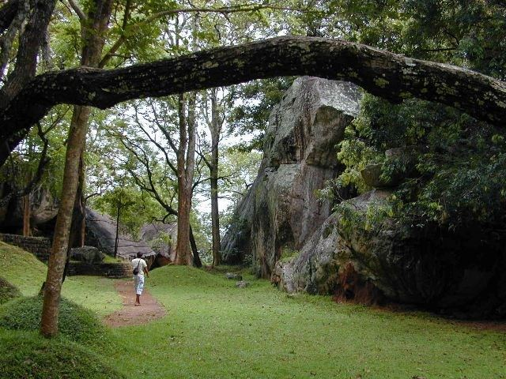
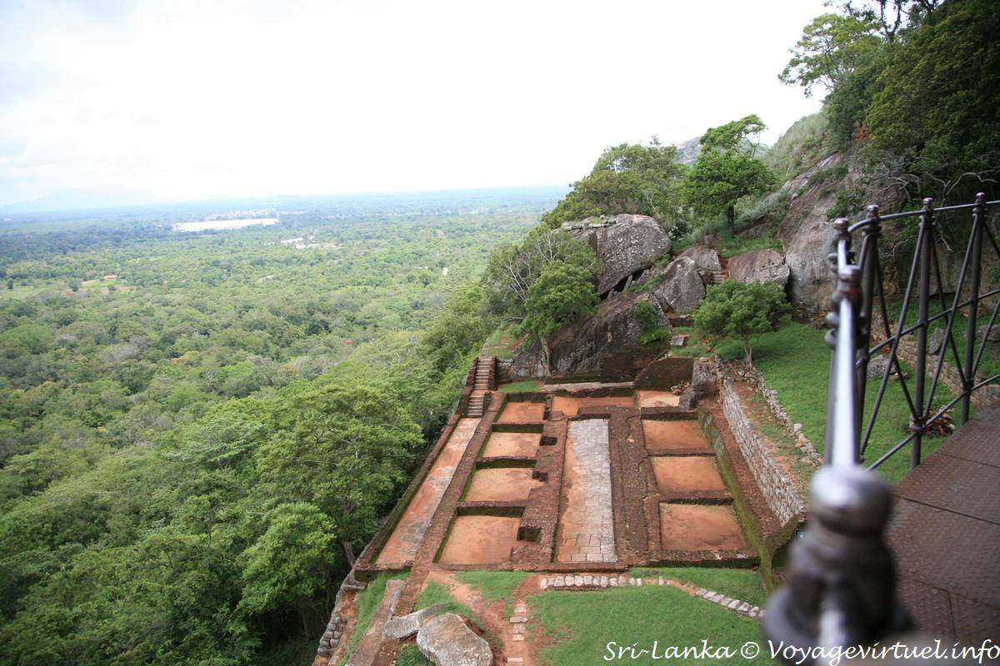
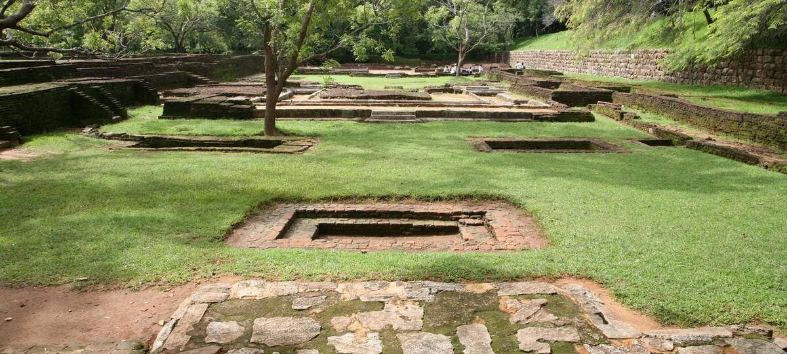
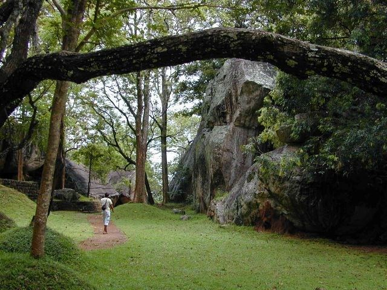
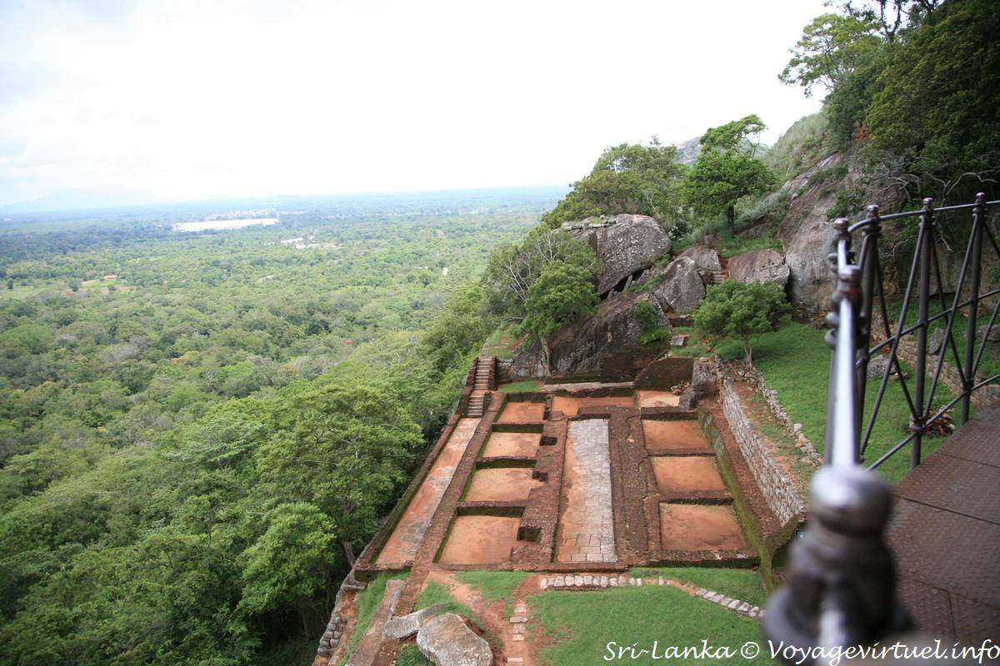
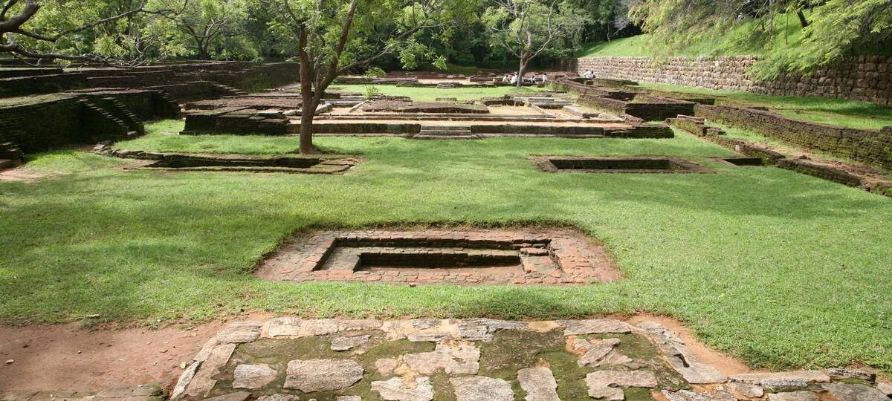
The gardens of Sigiriya are one of the most important aspects of the site, as they are among the oldest landscaped gardens in the world. The gardens are divided into three distinct but linked forms: water gardens, cave and boulder gardens, and terraced gardens.
The water gardens can be seen in the central section of the western precinct. Three
principal gardens are found here. The first garden consists of a plot surrounded by water. It is connected
to the main precinct using four causeways, with gateways placed at the head of each causeway. This garden is
built according to an ancient garden form known as char bagh, and is one of the oldest surviving models of
this form.
The second contains two long, deep pools set on either side of the path. Two shallow, serpentine streams
lead to these pools. Fountains made of circular limestone plates are placed here. Underground water conduits
supply water to these fountains which are still functional, especially during the rainy season. Two large
islands are located on either side of the second water garden. Summer palaces are built on the flattened
surfaces of these islands. Two more islands are located farther to the north and the south. These islands
are built in a manner similar to the island in the first water garden.
The third garden is situated on a higher level than the other two. It contains a large, octagonal pool with
a raised podium on its northeast corner. The large brick and stone wall of the citadel is on the eastern
edge of this garden.
The water gardens are built symmetrically on an east-west axis. The outer moat connects them on the west and
the large artificial lake to the south of the Sigiriya rock. All the pools are also interlinked using an
underground conduit network fed by the lake, and connected to the moats. A miniature water garden is located
to the west of the first water garden, consisting of several small pools and watercourses. This recently
discovered smaller garden appears to have been built after the Kashyapan period, possibly between the 10th
and 13th centuries
The boulder gardens consist of several large boulders linked by winding pathways. The gardens extend from the northern slopes to the southern slopes of the hills at the foot of Sigiris rock. Most of these boulders had a building or pavilion upon them; there are cuttings that were used as footings for brick walls and beams. They used to be pushed off from the top to attack enemies when they approached.
The terraced gardens are formed from the natural hill at the base of the Sigiriya rock. A series of terraces rises from the pathways of the boulder garden to the staircases on the rock. These have been created by the construction of brick walls, and are located in a roughly concentric plan around the rock. The path through the terraced gardens is formed by a limestone staircase. From this staircase, there is a covered path on the side of the rock, leading to the uppermost terrace where the lion staircase is situated.
Top
Budget Friendly
| Name | Price | Ratings |
|---|---|---|
| The Cattleya Guest House | LKR 10,144 | 5.0 |
| Atha Resort | LKR 26,202 | 4.9 |
| La Dolce Vita | LKR 12,169 | 4.8 |
| Sigiri Saman Home Stay | LKR 6,288 | 4.8 |
| Hotel Sigiriya | LKR 20,310 | 4.5 |
| Name | Price | Ratings |
|---|---|---|
| Rangana guest house | LKR 1,729 | 5.0 |
| Kevin Homestay | LKR 1,918 | 1.0 |
| SerendiPlace | LKR 12,169 | 4.8 |
| Kalana Homestay | LKR 6,288 | 4.8 |
| Green Grass Homestay & Lodge | LKR 20,310 | 4.5 |
Vist for more infomation Google Travel...
Do you like start the journey...
Take me there